Торт у вигляді футбольного поля можна зробити й удома, навіть якщо ви не працюєте зі складним кондитерським декором. Найважливіше тут — прямокутна форма, зелена поверхня та впізнавана біла розмітка. Ворота, м’яч, ім’я або номер гравця вже доповнюють основну ідею.
Не намагайтеся відразу повторити справжнє поле в усіх деталях. Для домашнього торта достатньо кількох характерних елементів, щоб футбольна тема зчитувалася з першого погляду.
Що знадобиться для оформлення
Спочатку вирішіть, яким буде торт: із кремовим покриттям без мастики чи з мастичним покриттям. Від цього залежить і набір матеріалів.
Для простого футбольного торта знадобляться:
- прямокутний торт;
- зелений крем або зелена мастика;
- білий крем або біла мастика для розмітки;
- кондитерський мішок;
- тонка кругла насадка для кремових ліній;
- насадка «травичка», якщо хочете додати фактуру газону;
- лінійка, шпажка або зубочистка для попередньої розмітки;
- футбольні ворота;
- невеликий м’яч та інший тематичний декор.
Порада!
Що простіша майбутня композиція, то легше отримати акуратний результат. Для першого такого торта достатньо поля, пари воріт і невеликого м’яча.
Як зробити торт «Футбольне поле» без мастики
Найпростіший домашній варіант — оформити футбольне поле кремом. Мастичне покриття тут не потрібне: достатньо рівної прямокутної основи, зеленого покриття, білої розмітки та кількох впізнаваних деталей.
Підготуйте прямокутну основу
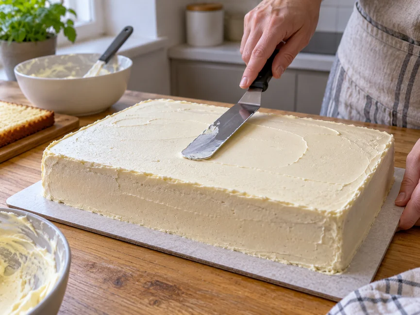
Для футбольного поля найзручніше використовувати прямокутний торт. Спочатку повністю зберіть його, вирівняйте верх і бокові сторони та добре охолодіть.
Поверхня має бути достатньо рівною. На помітних горбиках і западинах лінії поля виходять кривими, а ворота можуть стояти під кутом.
Якщо ідеально вирівняти крем не виходить, не намагайтеся приховати всі нерівності великою кількістю декору. Невелика природна фактура крему тут цілком допустима.
Зробіть зелене кремове покриття
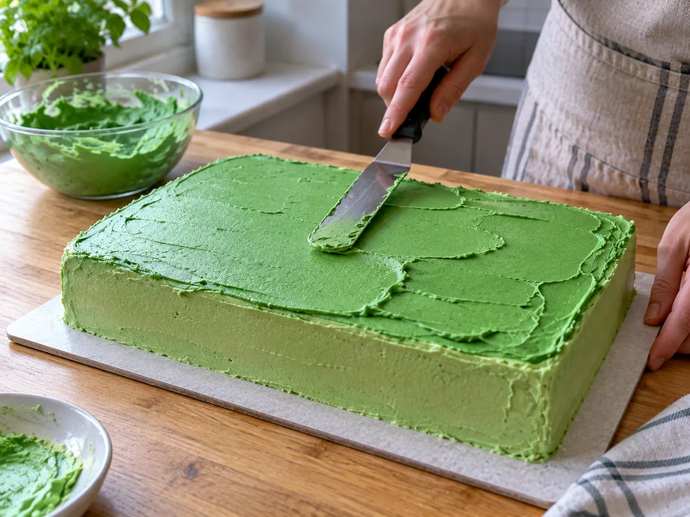
Покрийте верх торта зеленим кремом і розрівняйте його лопаткою або шпателем.
Не обов’язково домагатися абсолютно гладкої поверхні. Легка фактура крему добре підходить для футбольного поля й виглядає природно.
Якщо хочеться сильніше підкреслити ефект газону, по краях або на окремих ділянках можна відсадити короткі «травинки» через спеціальну насадку. Саму ігрову поверхню зручніше залишити відносно гладкою — так біла розмітка вийде акуратнішою.
Порада!
Якщо вперше працюєте з насадкою «травичка», спочатку зробіть кілька пробних відсадок на тарілці або пергаменті. Так легше підібрати натиск і довжину «травинок».
Нанесіть розмітку футбольного поля
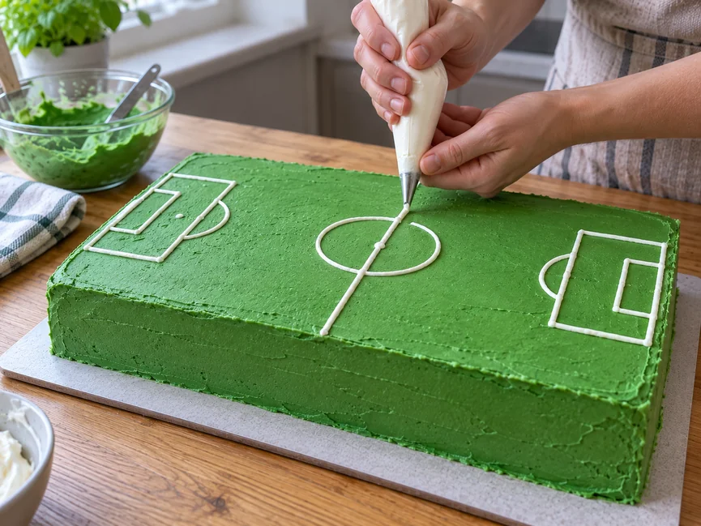
Розмітку краще не наносити відразу на око. Спочатку знайдіть середину торта й злегка позначте основні лінії шпажкою, зубочисткою або іншим тонким інструментом.
Для домашнього торта зазвичай достатньо:
- центральної лінії;
- кола в центрі поля;
- двох штрафних зон;
- ліній біля воріт.
Після попередньої розмітки проведіть білі лінії кремом через тонку круглу насадку.
Категорично не робіть!
Не починайте з дрібних ліній і додаткових позначок. Якщо основна геометрія вийшла нерівною, велика кількість деталей лише сильніше це підкреслить.
Якщо лінія крему пішла вбік, акуратно зніміть її невеликим ножем або лопаткою, відновіть зелене покриття й нанесіть ділянку заново.
Зробіть ворота без мастики
Для кремового варіанта зручно зробити прості легкі ворота без сітки з тонкої їстівної соломки або паличок pretzel.
Для склеювання та покриття підійде звичайний білий шоколад без начинки — плитка, калети або дропси. Поламайте його на невеликі шматочки й розтоплюйте в мікрохвильовій печі короткими імпульсами по 10–15 секунд, щоразу перемішуючи. Можна скористатися й водяною банею, але важливо, щоб у шоколад не потрапили вода або пара.
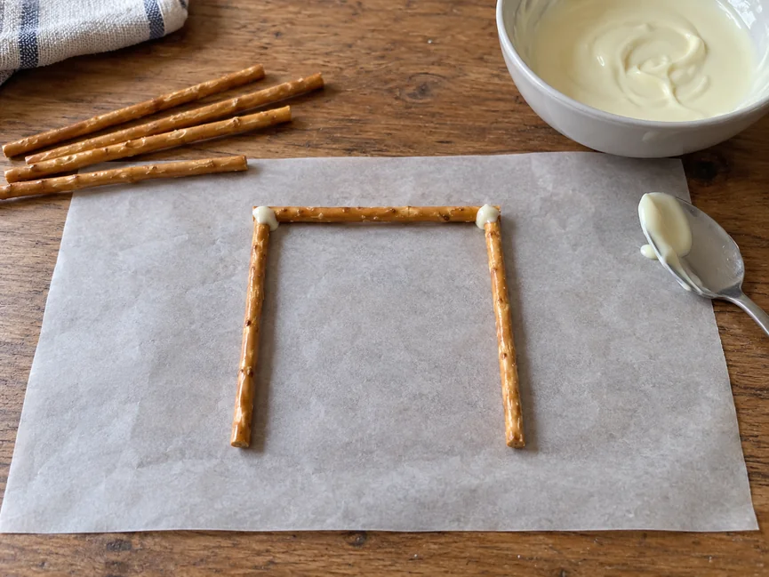
Розкладіть палички на пергаменті у формі каркаса й з’єднайте їх невеликою кількістю розтопленого білого шоколаду. Після застигання шоколаду конструкція стане достатньо жорсткою, але залишиться легкою.
Якщо хочеться отримати повністю білі ворота, покрийте палички тонким шаром білого шоколаду й дайте йому добре застигнути. Шоколад має бути текучим, але не надто гарячим.
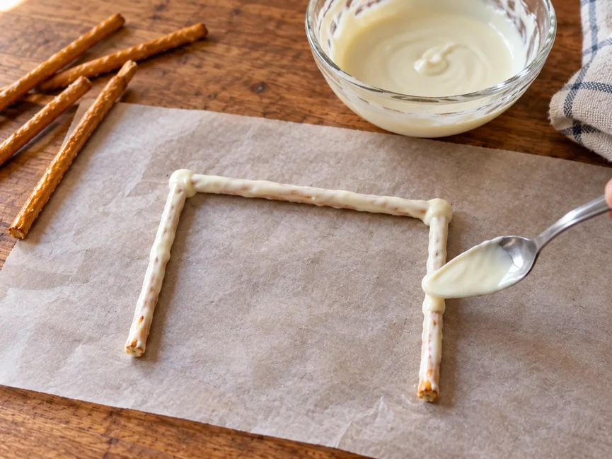
Встановлюйте такі ворота ближче до подачі. Під час тривалого контакту з вологим кремом хрусткі палички можуть поступово розм’якшуватися.
Ставте ворота по центру короткої сторони поля, сумістивши їх із лінією воріт. Каркас має розташовуватися на лінії воріт, а не всередині штрафного майданчика.
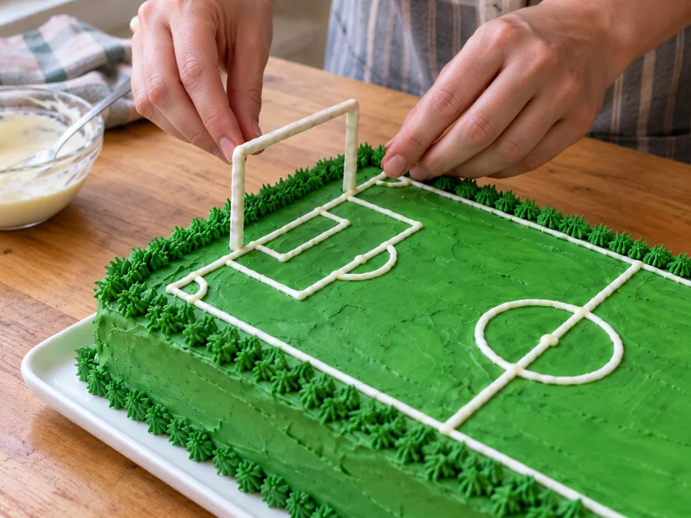
Додайте м’яч і тематичний декор
Невеликий футбольний м’яч добре працює як додатковий акцент. Його можна розмістити в центрі поля, біля воріт або трохи збоку.
Для варіанта без мастики зручно взяти готову білу шоколадну цукерку-сферу. Підійдуть, наприклад, невеликі білі шоколадні сфери для кондитерського декору. На поверхню нанесіть кілька темних плям розтопленим темним шоколадом — вийде проста імітація футбольного м’яча.
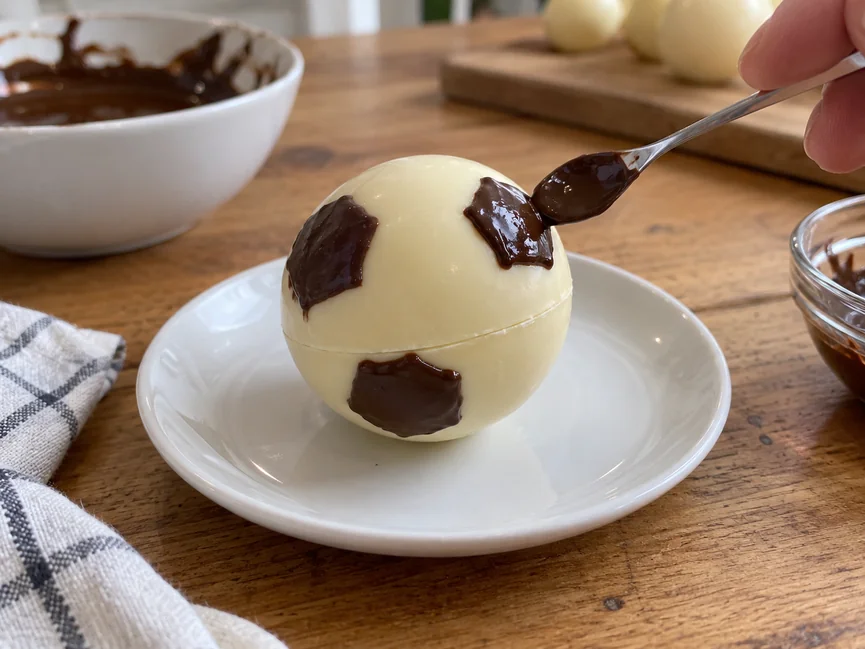
Плями не потрібно робити ідеально геометричними. На невеликому декорі достатньо кількох темних елементів, щоб м’яч легко впізнавався.
Не робіть м’яч занадто великим: інакше він візуально стане головним об’єктом і торт сприйматиметься вже не як футбольне поле.
За бажання додайте ім’я, вік, номер гравця, невелику емблему або коротке привітання. Для торта футболісту часто достатньо однієї-двох таких деталей.
Як зробити торт «Футбольне поле» з мастики
Мастичний варіант підходить, якщо хочеться отримати гладкішу поверхню та особливо чітку геометрію поля.
Підготуйте основу під мастику
Торт має бути добре зібраний, вирівняний і охолоджений. Під мастикою особливо помітні горбики, западини та нерівні кути, тому підготовці основи варто приділити більше уваги.
Покрийте поле зеленою мастикою
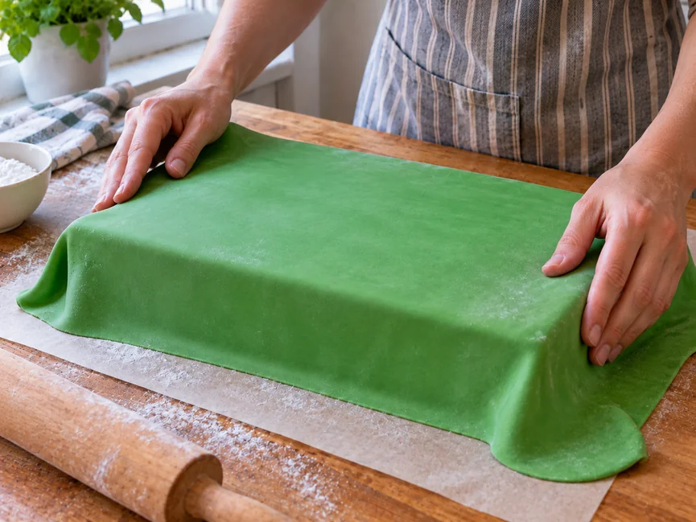
Розкачайте зелену мастику рівним пластом і перенесіть її на підготовлений торт. Акуратно розгладьте поверхню, кути та бокові сторони.
Потрібний відтінок можна отримати самостійно — докладніше про це розказано у статті «Як пофарбувати мастику барвником».
Якщо раніше не працювали з таким покриттям, спочатку перегляньте нашу інструкцію «Як працювати з мастикою для торта».
Зробіть білу розмітку з мастики
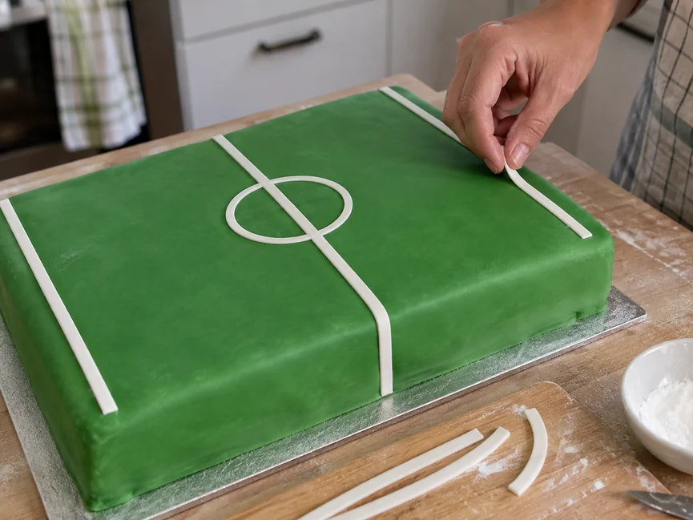
Спочатку злегка намітьте розташування основних ліній, щоб перевірити симетрію.
Потім виріжте з білої мастики тонкі смужки й викладіть центральну лінію, коло та основні зони поля.
Не додавайте відразу надто багато дрібних деталей. Спочатку переконайтеся, що головні лінії виглядають рівно й пропорційно.
Підготуйте мастичні ворота та м’яч
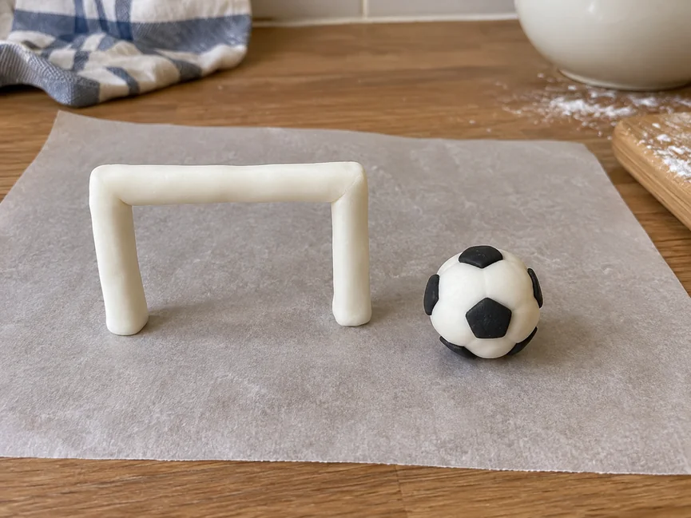
Ворота краще зробити заздалегідь із мастики, яка після висихання добре тримає форму. Сформуйте окремі стійки та перекладину, дайте їм висохнути, а потім з’єднайте деталі в каркас. Перед установленням на торт готові ворота мають повністю затвердіти.
Невеликий футбольний м’яч зробити простіше. Скачайте рівну кульку з білої мастики, трохи приплюсніть її знизу для стійкості й додайте невеликі чорні деталі з мастики. На маленькому м’ячі не обов’язково точно повторювати геометрію справжнього футбольного м’яча — достатньо, щоб характерний чорно-білий малюнок добре зчитувався.
Зліпіть прості бутси з мастики
Якщо хочеться зробити мастичний варіант виразнішим, додайте дві невеликі футбольні бутси. Для домашнього торта не потрібне складне реалістичне ліплення — достатньо простої впізнаваної форми.
Скачайте два невеликі овальні шматочки мастики. У кожного трохи витягніть передню частину, щоб утворився носок, трохи підніміть п’яту й злегка приплюсніть верх. Стеком або зубочисткою можна намітити лінію підошви та просту шнурівку.
Намагайтеся зробити обидві бутси приблизно однакового розміру. Готові деталі краще підготувати заздалегідь і дати їм трохи підсохнути, щоб вони не деформувалися під час перенесення на торт.
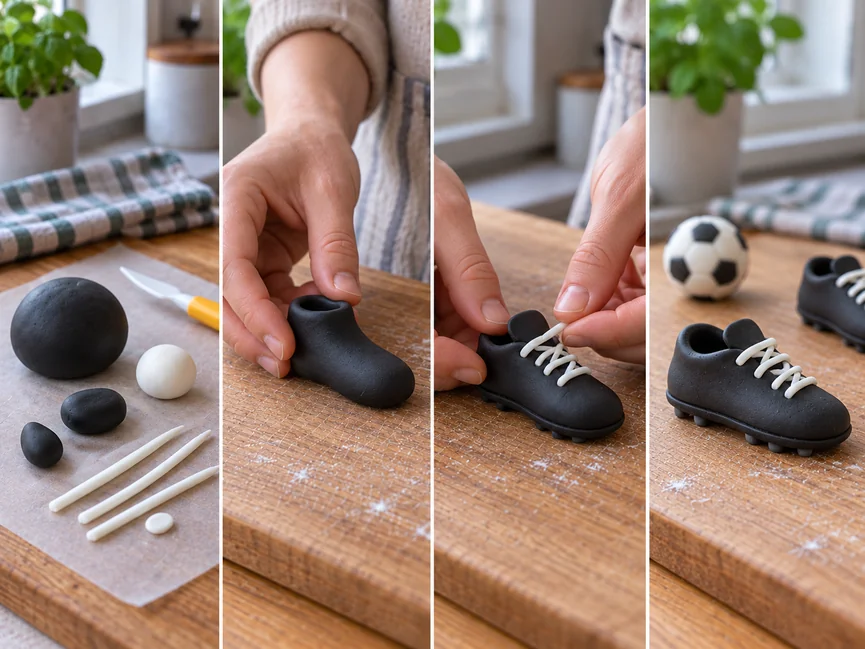
Про вибір маси для такого декору докладніше розказано у статті «Мастика для ліплення фігурок».
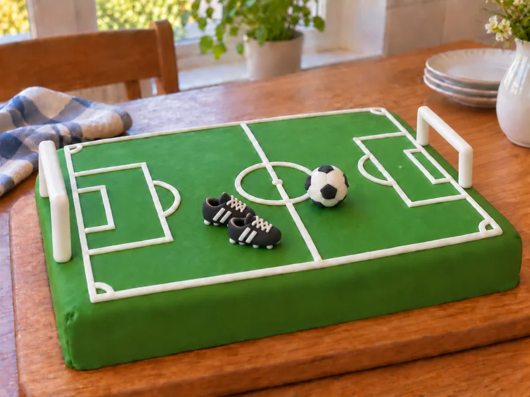
Не обов’язково перетворювати торт на складну композицію. Гладке зелене поле, біла розмітка, пара воріт і невеликий м’яч уже створюють зрозумілий футбольний образ. Бутси можна додати як додатковий акцент, якщо хочеться зробити мастичний варіант виразнішим.
Як оформити торт для футболіста
Саме футбольне поле вже задає тему, тому додаткових прикрас потрібно небагато.
Персоналізувати торт можна за допомогою:
- імені;
- віку;
- номера гравця;
- кольорів улюбленої команди;
- невеликої футболки;
- емблеми;
- короткого привітання.
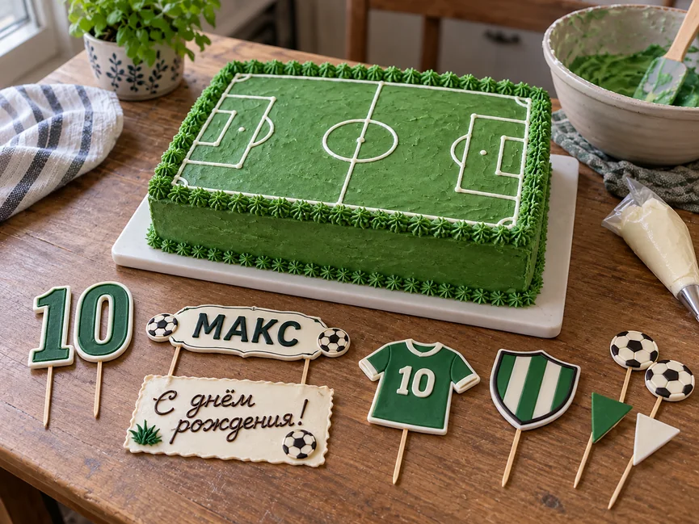
Оберіть один-два такі елементи. Якщо одночасно додати великий м’яч, футболку, номер, емблему, кілька топерів і довгий напис, саме поле загубиться серед декору.
Футбольний варіант добре підходить як одна з ідей тематичного чоловічого торта. Інші способи оформлення зібрані у статті «Як прикрасити торт для чоловіка в домашніх умовах».
Поширені помилки
Надто складна розмітка
Не потрібно переносити на торт кожну лінію справжнього футбольного поля. На невеликій поверхні така схема виглядатиме перевантаженою.
Спочатку зробіть центральну лінію та основні зони. Якщо місця достатньо, додайте решту елементів.
Нерівні лінії
На кремовому торті це найчастіше трапляється, коли розмітку відразу малюють без попередніх орієнтирів.
Спочатку злегка позначте ключові точки, перевірте симетрію й лише потім проводьте остаточні лінії.
На мастичному покритті діє той самий принцип: спочатку розкладіть основні елементи без остаточного закріплення й тільки після перевірки зафіксуйте їх.
Ворота нахиляються
Причина зазвичай у надто важкому декорі, м’якому покритті або недостатньо жорсткому каркасі.
Для кремового торта використовуйте легкі ворота й установлюйте їх на добре охолоджену поверхню ближче до подачі.
Мастичні ворота, навпаки, потрібно приготувати заздалегідь і дати їм повністю висохнути.
Поле перевантажене декором
Фігурки, м’ячі та топери не повинні закривати розмітку. Залиште частину зеленої поверхні вільною — тоді торт справді нагадуватиме футбольне поле.
Кремовий декор втрачає форму
Не починайте декорувати надто м’яким кремом. Якщо лінії або відсаджені елементи відразу розпливаються, охолодіть крем і сам торт і тільки після цього продовжуйте роботу.
Як спростити оформлення
Якщо складний футбольний торт робити не хочеться, залиште тільки найбільш упізнавані елементи.
Зробіть прямокутний торт, зелене покриття, центральну лінію, коло, пару воріт і невеликий м’яч. Додайте ім’я або номер — і оформлення вже виглядатиме завершеним.
Головне тут не кількість деталей, а акуратна форма та зрозуміла композиція. Краще просте футбольне поле з кількома добре виконаними елементами, ніж складний декор, у якому важко зрозуміти основну ідею.